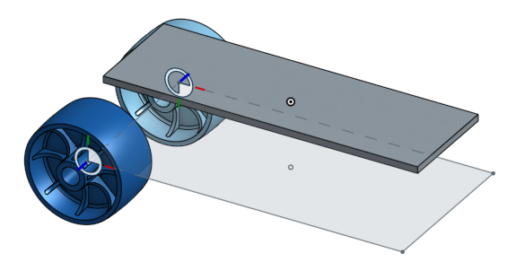

課綱：依作業所要求的範本中，延伸設計出屬於我們小組獨一無二的滑板。
下圖為原始外觀圖片。

___________________________________________________________
名稱：黑色流星滑板 （實體連結在這裡）
外觀：★★★★☆
技術：★★★★★
重量：★★★☆☆
此滑板設計主打流線外觀，且前後有微凸設計，讓腳有止滑感。
與一般滑板不同的是它只有三輪，在重量上就減輕很多，很適合隨身攜帶，但也因為只有三輪故需要有相當技術程度的使用者才能駕馭它的平衡。
___________________________________________________________
將步驟由上至下逐個介紹各特徵和草圖的用途
_________________________________________________________________________________
完成品視圖